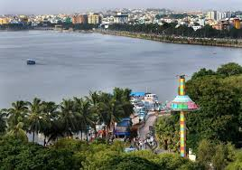

Lumbini Park
Lumbini Park is a public park situated on the banks of the Hussain Sagar Lake in Hyderabad. It offers boating facilities and a serene environment with lush greenery.
Location: Hyderabad, Telangana, India
Ticket Price: INR 10 per person (entry fee), additional charges for attractions like boating
Transportation: Accessible by road, well-connected by local buses and taxis. Nearest metro station is Necklace Road.